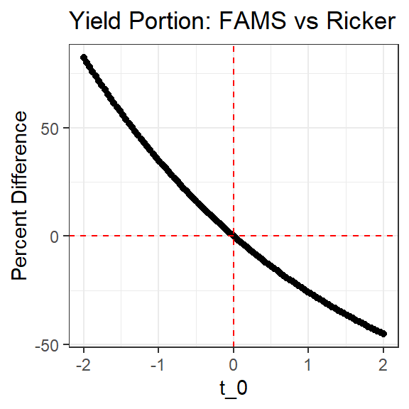
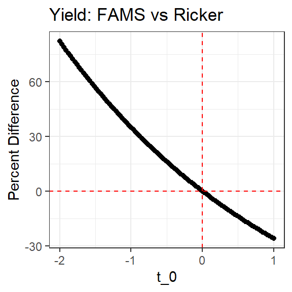
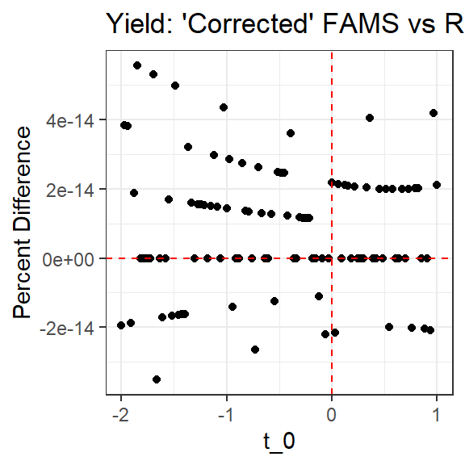

Code
FAMSvRicker1 <- function(N0,F,M,tr,t0) {
Nt <- N0*exp(-M*tr)
r <- tr-t0
Z <- F+M
data.frame(t0,
FAMS=Nt*exp(Z*r),
RCKR=N0*exp(F*r)) |>
dplyr::mutate(percdiff=100*(FAMS-RCKR)/RCKR)
}The Beverton-Holt yield-per-recruit (YPR) equation according to the FAMS documentation is:
The Beverton-Holt YPR equation according to Ricker is:
Note the use vs and the use of vs (in the exponent).
Parameters are defined as:
We have not been able to reproduce the results from FAMS with results in R using the Ricker equation. This suggests some issue with coding (in FAMS or by us in R) or that the FAMS and Ricker YPR equations are not equal. We don’t have the ability to examine the code in FAMS and we are confident that we have coded Ricker’s equation correction. Thus, we look more closely at the two yield equations here.
The two yield equations above are equivalent except for the portion (from FAMS) and the portion (from Ricker). Thus, as was suggested in the FAMS documentation, is it possible to make substitutions into the Ricker equation to produce the FAMS equation? We try this below.
This last expression is the FAMS equation EXCEPT that it includes . In other words, these portions of the yield equations would be exactly equal if such that . Otherwise, they are not equal.
Does this explain the difference between FAMS and Ricker?
Below is a quick function to compute the portions of the yield equations worked with above and to compute the percent differences (from the Ricker result) between the two results.
FAMSvRicker1 <- function(N0,F,M,tr,t0) {
Nt <- N0*exp(-M*tr)
r <- tr-t0
Z <- F+M
data.frame(t0,
FAMS=Nt*exp(Z*r),
RCKR=N0*exp(F*r)) |>
dplyr::mutate(percdiff=100*(FAMS-RCKR)/RCKR)
}Here the function is used to examine the impact of variable on the differences between the two yield equation portions, with all other parameters held constant. It can be seen that the two equation portions are equal when , the FAMS portion if greater when and the FAMS portion is less when . The percent difference can be quite great over the range of reasonable values.
tmp <- FAMSvRicker1(100,0.2,0.3,1,seq(-2,2,length.out=100))
ggplot(data=tmp,mapping=aes(y=percdiff,x=t0)) +
geom_point() +
geom_hline(yintercept=0,color="red",linetype="dashed") +
geom_vline(xintercept=0,color="red",linetype="dashed") +
labs(x="t_0",y="Percent Difference",title="Yield Portion: FAMS vs Ricker") +
theme_bw()
What is the impact of this difference in the actual yield equations. Again, a function to compute the two yield equations and find the absolute and percent differences is made. Note, however, that I included a “corrected” version of the FAMS equation that included the term.
FAMSvRicker <- function(N0,F,M,tr,t0,tlambda,Linf,K,a,b) {
Nt <- N0*exp(-M*tr)
r <- tr-t0
Z <- F+M
Winf <- 10^(a+b*log10(Linf))
P <- Z/K
Q <- b+1
X <- exp(-K*r)
X1 <- exp(-K*(tlambda-t0))
betas <- rFAMS:::iIbeta(X,P,Q)-rFAMS:::iIbeta(X1,P,Q)
data.frame(t0,
FAMS=((F*Nt*exp(Z*r)*Winf)/K)*betas,
cFAMS=((F*Nt*exp(Z*r)*Winf)/K)*betas*exp(M*t0),
RCKR=((F*N0*exp(F*r)*Winf)/K)*betas) |>
dplyr::mutate(percdiff=100*(FAMS-RCKR)/RCKR,
cpercdiff=100*(cFAMS-RCKR)/RCKR)
}Here it is seen that the estimated yield results can differ greatly between the two equations.
tmp <- FAMSvRicker(N0=100,F=0.2,M=0.3,tr=1,t0=seq(-2,1,length.out=100),
tlambda=10,Linf=500,K=3.1,a=-5.6,b=3.1)
ggplot(data=tmp,mapping=aes(y=percdiff,x=t0)) +
geom_point() +
geom_hline(yintercept=0,color="red",linetype="dashed") +
geom_vline(xintercept=0,color="red",linetype="dashed") +
labs(x="t_0",y="Percent Difference",title="Yield: FAMS vs Ricker") +
theme_bw()
However, the differences disappear (within machine rounding error) when the “corrected” FAMS equation is used.
ggplot(data=tmp,mapping=aes(y=cpercdiff,x=t0)) +
geom_point() +
geom_hline(yintercept=0,color="red",linetype="dashed") +
geom_vline(xintercept=0,color="red",linetype="dashed") +
labs(x="t_0",y="Percent Difference",title="Yield: 'Corrected' FAMS vs Ricker") +
theme_bw()
The YPR equations in Ricker and FAMS are only strictly equal when . Again, we can’t know what the authors of FAMS did, but perhaps they dropped this term as is often near 0 which means that would be near 1. However, as shown here, dropping that term can result in substantively different estimates of yield. Within a set of simulations this may not be a big deal because comparisons of yield are mostly made across other parameters that vary while is held constant.
However, it is not difficult to include the term in the coding so why not include it to be as accurate with Ricker as possible?
In addition, it likely makes sense to include this term as Ricker defines as the “hypothetical number of individuals that reach the hypothetical age annually” rather than the initial number of recruits at age 0. It seems reasonable that there would be a term to “handle” natural mortality for the time between and 0.